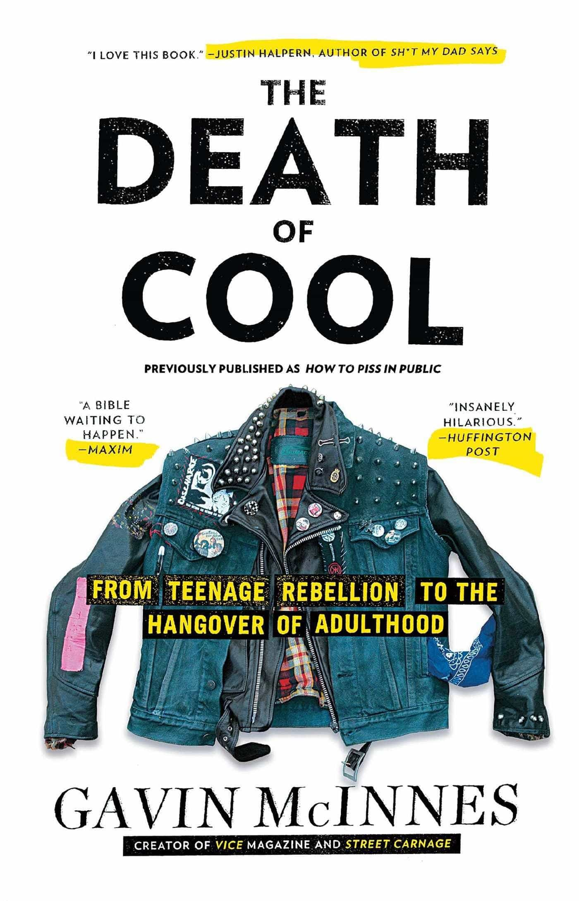
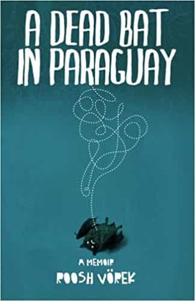

Alfonso Taft is a surfer stoner All-American Aryan alpha male quarterback. Raised in the Northeast, he speaks with a Southern twang for no apparent reason. Host of America's #1 Chadcast.


27 is a big year for men. 28, even bigger. For men around or approaching this age, there are three books I recommend: Righteous Indignation by Andrew Breitbart, Death of Cool by Gavin McInnes and A Dead Bat in Paraguay by Roosh.
In these three books the authors describe what their life was like in their late 20’s. All three share in common a transformative change during this period. For readers, especially those in their late 20’s these books provide the worthwhile tool of perspective.
Personally, I’m 27 approaching 28; I found it valuable to read about what other relatable men were like at this age.
These three books also double as history lesson concerning our modern media landscape. Although the authors all have recognizable names online today, life at this age for these men was far from glamorous.
Before launching their websites and giant media brands, Andrew Breitbart and Matt Drudge spent their time on obscure message boards.
“The Clinton alt group was my favorite, and it really exemplified what the early Internet was all about,” wrote Andrew Breitbart, “The other person dropping his ideas into this alt group (and many others) was somebody named Matt Drudge.”
After forming a friendship online, Matt Drudge later introduced Andrew Breitbart to Arianna Huffington. At the age of 28, Andrew Breitbart began his first media job.
“I’d be working out of Arianna’s house in Brentwood, not far from my apartment in Santa Monica.”
“I had my buddies Arianna and Matt, and we were all hanging out together, and we were all doing more from Los Angeles with minimal resources that the mainstream media were doing from Washington, DC, with hundreds of reporters. It was great fun.”
Can you believe Andrew Breitbart, Arianna Huffington, and Matt Drudge used to all hang out as friends? Can you also believe Mike Cernovich, Milo Yiannopoulos, and Baked Alaska used to all hang out as friends?
The moral of the story here is that your friends and business partners in your late 20’s will likely change, sometimes dramatically. Andrew Breitbart died in 2012. Matt Drudge is now the most recognizable name in media. Arianna took a sharp turn left and her husband left her for a man.
.@ariannahuff is unattractive both inside and out. I fully understand why her former husband left her for a man- he made a good decision.
— Donald J. Trump (@realDonaldTrump) August 28, 2012
Click here to view Righteous Indignation on Amazon.

In his late 20’s, Gavin McInnes started Vice alongside a heroin addict and a man referred to as “Bullshitter Shane.”
Before Vice became the horrific pile of Satanic globohomo trash it is today — it was still pretty degenerate. But they had some good writers. Mainly, Gavin, and Jim Goad, author of The Redneck Manifesto.
As revealed in the book, Gavin was the main creative force behind the brand’s early success:
“I worked my ass off every waking moment and cut costs to the point where we were doing the whole thing for free.”
“I shot the pictures myself, wrote the articles, edited them, and laid them out. When people said we needed more women or minorities, I made up ethnic-sounding or female aliases for myself.”
“Our computers were refurbished pieces of shit we were hustled into buying and they contained so many defects, it wasn’t unusual for me to lose a ten-page layout I’d spent all night assembling. Every time something like that happened, I’d get up off the floor, sweep away all the pieces of the chair I just smashed to bits, and focus on the fact that most people would have quit at this point, and that I wouldn’t. I was also happy not to be planting trees anymore.”
Gavin left Vice in 2008, and the brand went from being somewhat edgy to what it is today, an HIV-positive media virus. If you told a typical leftist millennial Vice employee, reader, or viewer that Gavin McInnes is the paternal creative behind the brand and Jim Goad used to write for them, they would roll on the ground crying, shitting themselves uncontrollably.
What else makes the book worthwhile for a man to read in his late 20’s? Gavin had game. He “managed to lay a good three hundred women over the course of twenty years and they were usually in the 7 range.”
“Threesomes are a cinch if you’re good-looking and famous. I’m ugly and hated so I had to work hard to set them up.”
He also had a sense of his own SMV and adjusted accordingly:
“When the bands were done and Vice was broke I marked myself down 50 percent off and fucked fatties, AKA “slumpdumpsters.”
He describes his late 20’s sexlife in such graphic detail, I’d rather not pull quotations from some of the more action packed chapters. Some of the paragraphs venture into the 50 Shades Of Grey territory from a man’s perspective.
Click here to view The Death Of Cool on Amazon.

After quitting his job as a microbiologist at the age of 28, Roosh left the United States en route to bang his way through the continent of South America. A Dead Bat in Paraguay gives the reader a first hand account in the evolution of Roosh’s international game. Things didn’t go exactly as planned for our protagonist and in the beginning and there are many rejections, flakes, and unexpected bowel movements. Roosh gave a few readings from this book on a recent live stream:
“The closer I got to giving Dr. Wang my two weeks notice, the more insolent I became. I started coming in extra late to minimize the time I would see him. I went home for lunches so he couldn’t find me. I took walks to the convenience store nearby instead of hanging out in the break room. Just a bit longer, my wall calendar told me, and I could go, until the day finally arrived.
I asked Dr. Wang if he could talk for a minute. He knew something was wrong because I never asked him for a private conversation. I just came out with it.
“Dr. Wang I’d like to put in my two weeks notice.”
“Whaaaaaaaat?”
“Yeah, umm, it’s just time for me to move on. I want to take some time off.”
“But I thought you were so happy here. You were going to start working on getting your masters degree. Why would you want to leave?”
“I just want to take a long vacation I guess. I’m not sure, but I want to take a break.”
“If there is a problem, we can fix it. Is it your pay? Tell me.”
I wanted to tell him all the reasons I hated him and the work. I wanted to tell him why working for a corporation is a one way path to a stale, monotonous life where the only thing to look forward to are increasingly dull weekends. But what would be the point? I would just waste my energy on a man who believed in the system. There was nothing he could do to change my mind.”
For those of you new to Roosh or ROK, Dead Bat is essentially Roosh: Episode 1. There are plenty of points in the book where Roosh could’ve “given up on game” or “went back home.” If he did, you wouldn’t be reading this today.
Click here to view A Dead Bat In Paraguay on Amazon.
The late 20’s are a time for the execution of intuitive bold decisions. The three books above show how three different men approached that crucial period of their lives.
Read More: 7 Influential Books About Power Published After the 19th Century